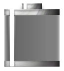
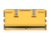
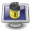
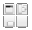

The following Modules are included in a default install of Bodhi Linux:
Utilities | ||
| Module | Gadget | Description |
| Backlight |  | Backlight control slider gadget |
| Clock |  | Analog clock by default, but also has a digital alternative. |
| Engage |  | Dock that supports compositing and no compositing for the Enlightenment desktop |
| IBar |  | Iconic application launcher (dock) |
| IBox | | A home for your iconic applications |
| Pager |  | Gadget to allow you to visualize your Virtual Desktops and the windows they contain |
| Shot |  | Simple screenshot+save/upload Module with Main Menu entry |
| Start |  | E17's "Start" button equivalent |
| Systray | | System tray that holds application icons like Skype, Pidgin, Kopete and others |
| Tasks |  | Gadget to allow you to switch between tasks |
| iTask |  | It will hold all your open applications for fast switching |
| Forecasts |  | Get weather updates on your desktop |
| Keyboard | | Keyboard layout configuration and switcher |
System | ||
| Battery |  | A Gadget to visualize your battery status |
| CPUfreq |  | Gadget to monitor and change the CPU frequency |
| Mixer |  | A module to provide a mixer for changing volume |
| Temperature | Temperature monitor | |
| DBus Extension |  | |
Look | ||
| Composite | Enlightenment Composite manager | |
| DropShadow |  | Module to add dropshadow to windows |
| Scale Windows | Scale windows down to see them all side by side | |
Files | ||
| EFM (Starter) | Enlightenment's integrated file manager | |
| EFM Operation Info |  | Can only be placed on the desktop |
| Places | Display the status of your drives, mount and unmount/eject them | |
Launcher | ||
| Everything (starter) |  | The run command module provides an application launcher dialog |
| Quickaccess |  | Enlightenment Quickaccess Launcher |
Core | ||
| Bodhi Close |  | Gadget to provide quick access to close the currently active application |
| Gadgets |  | Module to manage Gadgets on the desktop |
| Notification | notification-daemon alternative; Popup if an event occurs | |
| Settings Panel |  | General Enlightenment configuration panel |
| System Controls | | This module provides a unified popup dialog for all system actions in Enlightenment |
| Tiling |  | Positions/resizes your windows tilingly |
| Window Switcher |  | A module to show the list of client applications presently running |
Mobile | ||
| Elfe | Launcher for tablet profile | |
| Illume-Bluetooth |  | Control bluetooth devices in Illume. |
| Illume-Home | Default home launcher of Illume. Not used by default in Bodhi's Tablet profile. | |
| Illume-Home-Toggle | A button to return to the home screen of Illume | |
| Illume-Indicator | | The top panel of Illume. |
| Illume-Keyboard |  | An on-screen keyboard. |
| Illume-Keyboard-Toggle | | A button to call up the on-screen keyboard. |
| Illume-Mode-Toggle |  | A gadget to put the Illume desktop into split-mode. Not used by default in Bodhi's Tablet profile. |
| Illume-Softkey | A bottom bar for Illume. Not used by default in Bodhi's Tablet profile. | |
| Illume2 |  | The module that handles stripping window borders and maximizing all windows. |
Settings | ||
| Applications | | Allows configuration of Ibar, Restart, and Startup Applications |
| Dialogs |  | Configure default dialog properties |
| Edge Bindings | | Configure your edge binding settings here |
| Input Control Settings |  | Key, Mouse and Button Control settings |
| Interaction |  | Configure Mouse and Touch input |
| Language |  | Used to set default language |
| Menu Settings |  | Configures menu behavior |
| Performance |  | Used to configure certain performance related items such as frame rates and cache settings |
| Screen | Used to configure your screen | |
| Search Directories |  | Specifies the E17 search paths and default directories |
| Settings - Screen Setup |  | Used to configure your screen's resolution and set up multiple monitors |
| Shelves | | Shelf configuration dialog |
| Theme | Used to configure your theme preferences | |
| Window Manipulation | Configures window raise, resistance, and maximize policies | |
| Window Remembers | Delete existing window remembers | |
| The following Modules are available to install from the Bodhi Linux repositories: | ||
| Taskbar | | Gadget to provide a taskbar that shows running applications |
| TClock |  | A digital clock Gadget |
| DiskIO |  | Module to show disk activity |
| Mem |  | Real time memory updates on your E17 desktop |
| News | RSS feeds for your desktop | |
| Moon |  | View the current cycle of the moon on your desktop |
| Check email on your Enlightenment desktop | ||
| CPU |  | Module for measuring CPU usage |
| Snow | Perfect for winter time. Bring snow and fun to your desktop | |
| Flame |  | Set fire to your desktop |
| Rain |  | Clouds and rain for your desktop |
| Photo |  | Module to display a slideshow on your desktop |
| Slideshow |  | Enlightenment slideshow module |
| Deskshow |  | Gadget to allow you to quickly uncover your desktop |
| Everything-Tracker | | Search files with tracker (0.8), which also features a music browser |
| Everything-MPRIS |  | Manage the playlist of MPRIS aware music players (Amarok, Audacious, xmms2, ...) |
| Everything-Places | | Module to extend Run Everything |
| Everything-Websearch | | Find stuff from Wikipedia, use google suggestions or "Google for it"TM, translate text, and search/browse through Youtube |
| Everything-Wallpaper |  | Module to extend Run Everything |
| Everything-Pidgin | | Open chat window or send files to buddies with Pidgin |


{kind=link}
{kind=link}
{kind=link}
{kind=link}
{kind=link}
{kind=link}
{kind=link}
{kind=link}
{kind=link}
{kind=link}
{kind=link}
{kind=link}
{kind=link}
{kind=link}
{kind=link}
{kind=link}
{kind=link}
{kind=link}